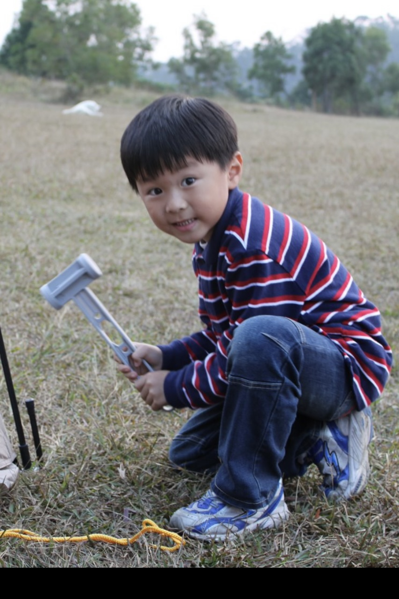
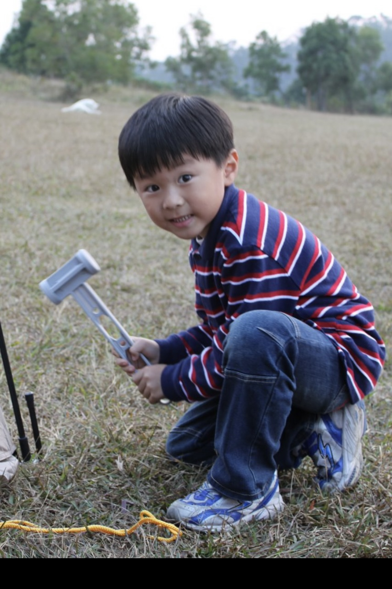

Hey again! 👋
I'm currently a student at University of California, Berkeley studying Computer Science and Data Science.


More About Me...
I'm Bo-Wei(Warren) Chang, a junior studying computer science and data science. I've always been very interested about technology and its potential to make this world a better place. Whether it’s developing innovative software solutions or exploring the potential of AI and machine learning, I am driven by a deep passion to use technology as a force for good.
Outside of school and work, I really enjoy playing golf and video games. Golf is a sport that challenges me to think strategically and stay calm under pressure, which are skills that translate well into my work and school. Video games, on the other hand, fuel my creativity and problem-solving skills. Whether I’m on the golf course or immersed in a game, I’m always looking for ways to push myself, learn new things, and have fun along the way!
Experience
Software Engineer • June 2024 - Present
Utilized Python libraries such as PyPDF2, PDFMiner, and NLTK to parse and process large volumes of educational content, achieving a 94.1% classification accuracy. Developed and optimized processes for structuring classified text entities, contributing to the creation of educational worksheets.
Software Developer • January 2024 - Present
Collaborates with a team of developers to build and maintain full-stack web applications for high-growth startups and campus organizations. Utilizes modern web technologies such as React.js, Node.js, and MongoDB to create scalable, responsive, and user-friendly applications. Engages in the complete development cycle from concept to deployment, ensuring code quality, performance optimization, and alignment with client needs.
Software Engineer Intern • May 2024 - August 2024
Optimized vector embeddings in a database, improving data retrieval accuracy from 81.29% to 90.08%. Developed prototypes of an AI recruiter using the ChatGPT API, enhancing candidate profile insights and streamlining the hiring process for the HR team.
Software Engineer Intern • January 2024 - May 2024
Automated the user-analyzed video processing system using React.js and Remotion frameworks, reducing cloud server runtime by 43.87%. Deployed a real-time video generation pipeline with Google Pub/Sub, increasing data processing speed by 28.6%.
Fullstack Developer • June 2023 - January 2024
Led the redesign and functional upgrade of the client dashboard, significantly improving site performance and user experience. Utilized React.js to develop a responsive frontend architecture and managed backend databases using SQL, integrating APIs for data fetching and uploading.
Machine Learning Engineer Intern • June 2023 - August 2023
Worked on training custom datasets for traffic signal recognition, manually labeling over 4000 images using Roboflow. Implemented the model using YOLOv7, achieving an accuracy rate of 88.15%.